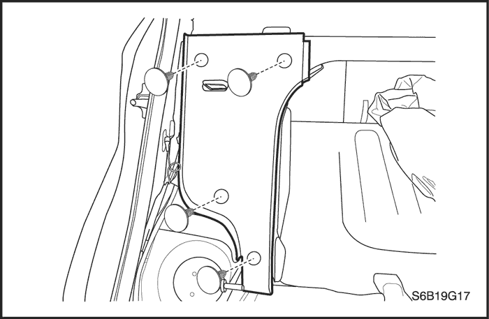

SECCIÓN 9G
TAPIZADO INTERIOR
Precaución: Desconecte el cable negativo de la batería antes de desmontar o instalar cualquier unidad eléctrica o cuando exista la posibilidad de que una herramienta o equipo pueda entrar en contacto con bornes eléctricos expuestos. La desconexión de dicho cable ayudará a evitar lesiones personales y daños al vehículo. La llave de contacto debe estar en posición LOCK a menos que se indique lo contrario.
ESPECIFICACIONES
Especificaciones de apriete
|
Aplicación
|
N•m
|
Árbol de transmisión izquierdo
|
Articulación
|
|
Tornillo del tirador de la puerta
|
3,5
|
-
|
31
|
|
Tornillos de la consola del piso
|
4
|
-
|
35
|
|
Tornillos del alojamiento del cambio de marchas
|
5
|
-
|
44
|
|
Tornillos del anclaje del cinturón de seguridad trasero
|
38
|
28
|
-
|
|
Tornillo del respaldo del asiento trasero
|
25
|
18
|
-
|
|
Pasador de bloqueo del asiento trasero
|
38
|
28
|
-
|
|
Tornillos del anclaje del cinturón de seguridad
|
38
|
28
|
-
|
|
Tornillos del soporte del cinturón de seguridad
|
10
|
-
|
89
|
|
Tornillos del panel de guarnecido
|
3,5
|
-
|
31
|
HERRAMIENTAS ESPECIALES
Tabla de herramientas especiales

 
|
KM-475-B
Extractor de elementos de acabado
|
MANTENIMIENTO Y REPARACIÓN
servicio con vehículo en marcha

tapizado de puerta delantera
Herramientas necesarias
Extractor de elementos de acabado KM-475-B
Procedimiento de desmontaje
- Baje la ventanilla delantera.
- Quite la cubierta de la manilla de la puerta delantera y los tornillos.
- Desmonte el embellecedor del tirador interior de la puerta.
- Desmonte el guarnecido con la ayuda del extractor de elementos de acabado KM-475-B.
procedimiento de montaje
- Monte el guarnecido.
- Monte la tapa del tirador de la puerta delantera.
Apretar
Apriete los tornillos del guarnecido hasta 3,5 N•m (31 lb-pulg.).
- Monte la tapa del tirador de la puerta delantera.
- Monte el embellecedor del tirador interior de la puerta.
- Suba la ventanilla.
tapizado de puerta trasera
Herramientas necesarias
Extractor de elementos de acabado KM-475-B
Procedimiento de desmontaje
- Baje la ventanilla trasera.
- Desmonte la tapa del tirador de la puerta trasera.
- Quite los tornillos del tirador de la puerta.
- Desmonte el embellecedor del tirador interior de la puerta.
- Desmonte el guarnecido con la ayuda del extractor de elementos de acabado KM-475-B.
procedimiento de montaje
- Monte el guarnecido.
- Monte la tapa del tirador de la puerta trasera.
Apretar
Apriete los tornillos del guarnecido hasta 3,5 N•m (31 lb-pulg.).
- Monte la tapa del tirador de la puerta trasera.
- Monte el embellecedor del tirador interior de la puerta.
- Suba la ventanilla.
Guarnecido del montante B superior
Procedimiento de desmontaje
- Quite el tornillo y desmonte el anclaje superior del cinturón de seguridad delantero.
- Desmonte el guarnecido inferior del montante B. Consulte el apartado "Guarnecido del montante B inferior" de esta sección.
- Desmonte el guarnecido del montante B superior.
procedimiento de montaje
- Monte el guarnecido del montante B superior.
- Monte el guarnecido del montante B inferior. Consulte el apartado "Guarnecido del montante B inferior" de esta sección.
- Monte el anclaje superior del cinturón de seguridad delantero con su tornillo.
Apretar
Apriete el tornillo del anclaje del cinturón de seguridad hasta 38 N•m (28 lb-pie).
Guarnecido del montante B inferior
Procedimiento de desmontaje
- Retire la parte trasera y la parte delantera de la cubierta del panel basculante delantero.
- Quite el tornillo y el cinturón de seguridad.
- Desmonte el guarnecido del montante B inferior.
procedimiento de montaje
- Monte el guarnecido del montante B inferior.
- Monte el cinturón de seguridad delantero con su tornillo.
Apretar
Apriete el tornillo del cinturón de seguridad hasta 38 N•m (28 lb-pulg.).
- Monte la cubierta del panel basculante delantero.
- Monte la cubierta del panel basculante trasero en su posición original.
Estante del panel trasero superior
Procedimiento de desmontaje
- Desmonte el respaldo del asiento trasero. Consulte la Sección 9H, Asientos.
- Quite los clips de retención de plástico y desmonte la cubierta de la bandeja trasera.
procedimiento de montaje
- Monte la cubierta de la bandeja trasera y coloque los clips de retención de plástico.
- Monte el respaldo del asiento trasero. Consulte la Sección 9H, Asientos.
Moldura embellecedora interior de la puerta trasera
Procedimiento de desmontaje
- Haga palanca para desmontar la moldura embellecedora interior de la puerta trasera.
procedimiento de montaje
- Monte la moldura embellecedora interior de la puerta trasera.
Moldura embellecedora inferior de la puerta trasera del modelo hatchback
Herramientas necesarias
Extractor de elementos de acabado KM-475-B
Procedimiento de desmontaje
- Abra el portón trasero.
- Use el extractor de elementos de acabado KM-475-B para quitar los clips de la moldura embellecedora inferior.
- Desmonte la moldura embellecedora inferior.
procedimiento de montaje
- Monte la moldura embellecedora inferior con los clips.
- Cierre el portón trasero.
Cubierta del panel basculante delantero
Procedimiento de desmontaje
- Quite el tornillo que sujeta la cubierta del panel basculante delantero.
- Desmonte la cubierta del panel basculante delantero.
procedimiento de montaje
- Monte la cubierta del panel basculante delantero con el tornillo.
Cubierta del panel basculante trasero
Procedimiento de desmontaje
- Desmonte el cojín y el respaldo del asiento trasero. Consulte la Sección 9H, Asientos.
- Quite el clip que fija la tapa del panel del basculador trasero.
- Quite el tornillo que sujeta el de guarnecido del paso de rueda.
- Desmonte la cubierta del panel basculante trasero.
procedimiento de montaje
- Monte la cubierta del panel basculante trasero.
- Monte el guarnecido del paso de rueda con su tornillo.
- Monte la cubierta del panel trasero basculante con sus clips.
- Monte el respaldo del asiento trasero con el tornillo.
Apretar
Apriete el tornillo del respaldo del asiento trasero hasta 25 N•m (18 lb-pie).
- Monte el cojín del asiento trasero. Consulte la Sección 9H, Asientos.
Alfombra de suelo
Procedimiento de desmontaje
- Desconecte el cable negativo de la batería.
- Desmonte la cubierta de los paneles basculantes traseros izquierdo y derecho. Consulte el apartado "Cubierta del panel basculante trasero" de esta sección.
- Quite los tornillos y desmonte del montante B los anclajes de la parte inferior derecha e izquierda del cinturón de seguridad delantero.
- Desmonte los guarnecidos izquierdo y derecho del montante B inferior. Consulte el apartado "Guarnecido del montante B inferior" de esta sección.
- Desmonte los asientos delanteros. Consulte la Sección 9H, Asientos.
- Desmonte haciendo palanca los guarnecidos basculantes delanteros izquierdo y derecho.
- Desmonte la consola del piso. Consulte el apartado "Consola del piso" de esta sección.
- Retire la alfombrilla.
procedimiento de montaje
- Ponga la alfombrilla.
- Monte la consola del piso. Consulte el apartado "Consola del piso" de esta sección.
- Monte las cubiertas de los paneles basculantes delanteros izquierdo y derecho.
- Monte los asientos delanteros. Consulte la Sección 9H, Asientos.
- Monte el guarnecido izquierdo y derecho del montante B inferior. Consulte el apartado "Guarnecido del montante B inferior" de esta sección.
- Monte los anclajes de la parte inferior derecha e izquierda del cinturón de seguridad delantero en el montante B con sus tornillos.
Apretar
Apriete los tornillos de los anclajes del cinturón de seguridad hasta 38 N•m (28 lb-pie).
- Monte el respaldo del asiento trasero. Consulte la Sección 9H, Asientos.
- Monte los paneles de guarnecido basculantes traseros izquierdo y derecho. Consulte el apartado "Panel de guarnecido basculante trasero" de esta sección.
- Conecte el cable negativo de la batería.
Consola de suelo
Procedimiento de desmontaje
- Desconecte el cable negativo de la batería.
- Desmonte la funda guardapolvo de la palanca del cambio.

- Quite los tornillos de la consola del piso.
- Desmonte la tapa de la consola del piso.
- Desmonte la tapa del freno de estacionamiento.
- Desenchufe el conector eléctrico.
- Desmonte la consola del piso.
procedimiento de montaje
- Enchufe el conector eléctrico.
- Monte la consola del piso con sus tornillos.
Apretar
Apriete los tornillos de la consola del piso hasta 4 N•m (35 lb-pulg.).
- Monte la tapa del freno de estacionamiento.
- Monte la funda guardapolvo de la palanca del cambio.
- Monte la tapa de la consola.
- Conecte el cable negativo de la batería.
Guarnecido del montante A
Procedimiento de desmontaje
- Desmonte el guarnecido del montante A haciendo palanca.
- Desenchufe el conector eléctrico.
procedimiento de montaje
- Enchufe el conector eléctrico.
- Monte el guarnecido del montante A.
Guarnecido del montante C
Procedimiento de desmontaje
- Desmonte el guarnecido del montante C.
procedimiento de montaje
Aviso: Metales distintos en contacto directo pueden corroerse rápidamente. Asegúrese de utilizar los elementos de sujeción correctos para evitar una corrosión prematura.
- Monte el panel de guarnecido del montante C.
Guarnecido del montante C - Hatchback
Procedimiento de desmontaje
- Desmonte el cinturón de seguridad del guarnecido del montante C.
- Desmonte la tapa del panel basculante trasero. Consulte el apartado "Cubierta del panel basculante trasero" de esta sección.
- Desmonte el guarnecido del montante C.
procedimiento de montaje
Aviso: Metales distintos en contacto directo pueden corroerse rápidamente. Asegúrese de utilizar los elementos de sujeción correctos para evitar una corrosión prematura.
- Monte el guarnecido del montante C.
- Monte la cubierta del panel basculante trasero. Consulte el apartado "Cubierta del panel basculante trasero" de esta sección.
- Monte el cinturón de seguridad del guarnecido del montante C.
Guarnecido del panel lateral delantero - Hatchback de tres puertas
Procedimiento de desmontaje
- Desmonte la tapa del panel basculante. Consulte el apartado "Tapa del panel basculante" de esta sección.
- Desmonte el asiento trasero. Consulte la Sección 9H, Asientos.
- Extraiga los clips, el tornillo del anclaje inferior del cinturón de seguridad y el pasador de bloqueo del asiento trasero.
- Extraiga el guarnecido del panel lateral delantero.
procedimiento de montaje
- Monte el guarnecido del panel lateral delantero.
- Coloque los clips, el tornillo del anclaje inferior del cinturón de seguridad y el pasador de bloqueo del asiento trasero.
Apretar
- Apriete el tornillo del anclaje inferior del cinturón de seguridad hasta 38 N•m (28 lb-pie).
- Apriete el pasador de bloqueo del asiento trasero hasta 38 N•m (28 lb-pie).
- Monte el asiento trasero. Consulte la Sección 9H, Asientos.
- Monte la cubierta del panel basculante. Consulte el apartado "Tapa del panel basculante" de esta sección.
Tapa del lado del compartimento de carga
Procedimiento de desmontaje
- Desconecte el cable negativo de la batería.
- Extraiga el guarnecido del panel lateral delantero. Consulte el apartado "Guarnecido del panel lateral delantero" de esta sección.
- Quite el clip del guarnecido del panel lateral trasero.
- Desenchufe el conector de altavoces de la tapa del lado del compartimento de carga.
- Quite los tornillos de la tapa del lado del compartimento de carga.
- Extraiga la tapa del lado del compartimento de carga.
procedimiento de montaje
- Coloque la tapa del lado del compartimento de carga.
- Coloque los tornillos de la tapa del lado del compartimento de carga.
- Enchufe el conector de altavoces de la tapa del lado del compartimento de carga.
- Coloque el clip en el guarnecido del panel lateral trasero.
- Monte el guarnecido del panel lateral delantero. Consulte el apartado "Guarnecido del panel lateral delantero" de esta sección.
- Conecte el cable negativo de la batería.

Guarnecido ventanilla lateral - Hatchback de tres puertas
Procedimiento de desmontaje
- Extraiga el guarnecido del panel lateral delantero. Consulte el apartado "Guarnecido del panel lateral delantero" de esta sección.
- Extraiga el tornillo del anclaje superior del cinturón de seguridad.
- Extraiga la tapa del lado del compartimento de carga. Consulte el apartado "Tapa del lado del compartimento de carga" de esta sección.
- Extraiga el guarnecido de la ventanilla lateral.
procedimiento de montaje
- Monte el guarnecido de la ventanilla lateral.
- Coloque la tapa del lado del compartimento de carga. Consulte el apartado "Tapa del lado del compartimento de carga" de esta sección.
- Coloque el tornillo del anclaje superior del cinturón de seguridad.
Apretar
Apriete el tornillo del anclaje superior del cinturón de seguridad hasta 38 N•m (28 lb-pie).
- Monte el guarnecido del panel lateral delantero. Consulte el apartado "Guarnecido de la ventanilla lateral (Hatchback de tres puertas)" de esta sección.
Escudo de la puerta delantera
Procedimiento de desmontaje
- Desmonte el escudo haciendo palanca.
procedimiento de montaje
- Monte el escudo.
Panel de guarnecido lateral trasero
Procedimiento de desmontaje
- Desmonte la tapa del panel trasero inferior. Consulte el apartado Tapa del panel trasero inferior en esta sección
- Quite los clips y el guarnecido del panel lateral trasero.
procedimiento de montaje
Aviso: Metales distintos en contacto directo pueden corroerse rápidamente. Asegúrese de utilizar los elementos de sujeción correctos para evitar una corrosión prematura.
- Coloque el guarnecido del panel lateral trasero con sus clips.
- Monte la tapa del panel trasero inferior. Consulte el apartado Tapa del panel trasero inferior en esta sección.
- Monte el respaldo del asiento trasero. Consulte la Sección 9H, Asientos.
Guarnecido del panel lateral trasero - Hatchback
Procedimiento de desmontaje
- Quite los clips y el guarnecido del panel lateral trasero.
procedimiento de montaje
Aviso: Metales distintos en contacto directo pueden corroerse rápidamente. Asegúrese de utilizar los elementos de sujeción correctos para evitar una corrosión prematura.
- Coloque los clips y el guarnecido del panel lateral trasero.

Tapizado de alojamiento de rueda trasero
Procedimiento de desmontaje
- Desmonte el respaldo del asiento trasero. Consulte la Sección 9H, Asientos.
- Desmonte la tapa del panel basculante trasero.
- Desmonte el guarnecido del paso de la rueda delantera.
- desmonte el guarnecido trasero del paso de rueda.
- Quite los clips de retención de plástico y desmonte el guarnedido del panel lateral trasero.
procedimiento de montaje
Aviso: Metales distintos en contacto directo pueden corroerse rápidamente. Asegúrese de utilizar los elementos de sujeción correctos para evitar una corrosión prematura.
- Coloque el guarnecido del panel lateral trasero con los clips de retención de plástico.
- Monte el guarnecido del paso de la rueda delantera.
- Monte el guarnecido del paso de la rueda delantera.
- Monte el guarnecido del panel basculante trasero.
- Monte el respaldo basculante trasero. Consulte la Sección 9H, Asientos.
Tapa del panel trasero inferior
Procedimiento de desmontaje
- Quite los clips de retención de plástico y desmonte la tapa inferior del panel trasero.
procedimiento de montaje
- Coloque la tapa inferior del panel trasero con los clips de retención de plástico.
DESCRIPCIÓN GENERAL Y FUNCIONAMIENTO DEL SISTEMA
Paneles de tapizado interior
Los paneles de guarnecido (acabado) interior son de plástico moldeado y van fijados con tornillos o clips de plástico.
Respiradero de alivio de presión
Cuando se cierran las ventanillas y el sistema de ventilación se pone en marcha, la entrada de aire exterior al habitáculo genera una presión positiva dentro del vehículo. Para aliviar la presión, el aire se libera a través de la toberas de alivio. Las toberas de alivio de presión están situadas en la parte trasera del vehículo, detrás del tablero del parachoques.
Consola de suelo
La consola del piso encaja sobre el túnel situado en el piso del vehículo y se extiende desde debajo de la parte central del panel de instrumentos hasta la zona de los asientos traseros. La parte delantera de la consola contiene el encendedor y la palanca de la caja de cambios. La parte trasera aloja la palanca del freno de estacionamiento, los interruptores de los elevalunas eléctricos (si el vehículo dispone de los mismos) y un soporte para vasos.
El módulo de control del airbag (SDM) está situado debajo de la parte delantera de la consola.
Alfombra de suelo
La alfombrilla, moldeada en una sola pieza, se extiende sobre los paneles del piso delantero y trasero.